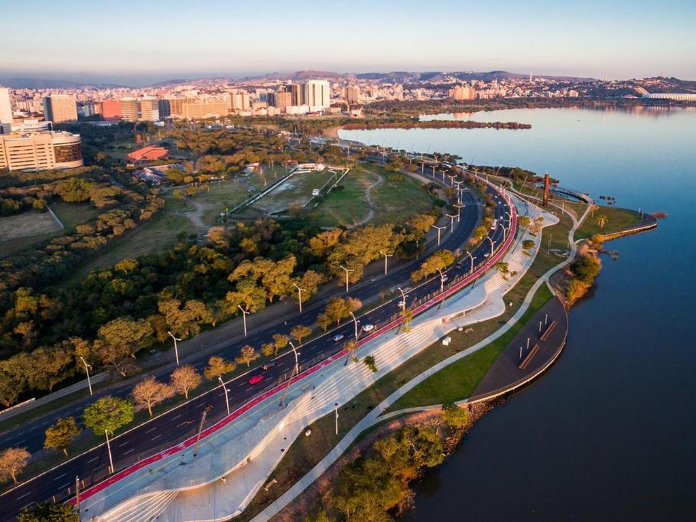
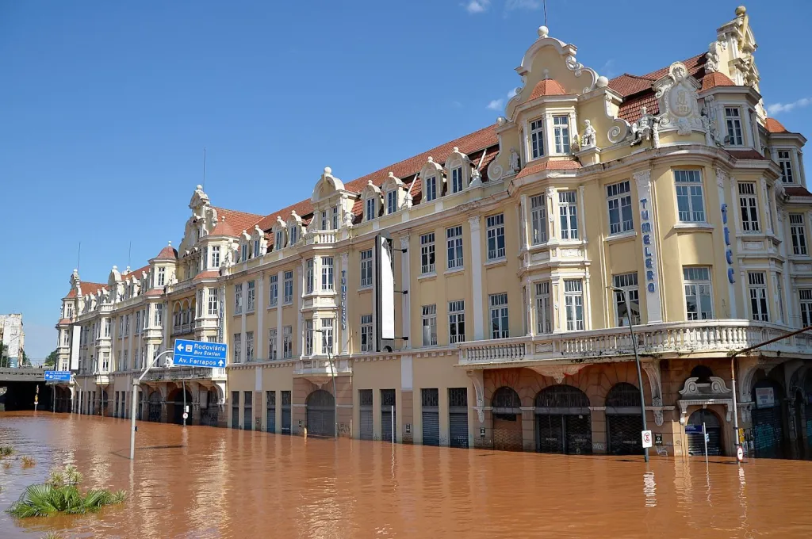

Introdução
O Rio Guaíba é uma importante via fluvial que atravessa Porto Alegre, a capital do estado do Rio Grande do Sul. O nível do Guaíba é monitorado constantemente devido à sua relevância para o abastecimento de água, navegação, lazer e, principalmente, para a prevenção de enchentes. A histórica enchente de 1941 foi um evento catastrófico que devastou a cidade, submergindo bairros inteiros e causando grandes prejuízos materiais e humanos. Este evento marcou a história de Porto Alegre, destacando a necessidade de um monitoramento contínuo e de medidas de mitigação para evitar tragédias semelhantes no futuro.
Acompanhamento do Guaíba
História do Rio Guaíba
O Rio Guaíba possui uma rica história que se entrelaça com o desenvolvimento da cidade de Porto Alegre e do estado do Rio Grande do Sul. Desde tempos pré-coloniais, as margens do Guaíba foram habitadas por povos indígenas que utilizavam suas águas para pesca e transporte. Com a chegada dos colonizadores europeus, o rio se tornou um ponto estratégico para o comércio e o crescimento urbano.

Em 1941, Porto Alegre enfrentou uma das piores enchentes de sua história. As águas do Guaíba subiram a níveis alarmantes, causando destruição em vários bairros e deixando milhares de desabrigados. Este evento marcou profundamente a cidade, levando à construção de barragens e sistemas de alerta para prevenir futuras enchentes.
Hoje, o Guaíba é vital para a vida de Porto Alegre. Ele fornece água potável, serve como rota de transporte e é um local popular para atividades recreativas. O monitoramento contínuo do seu nível é essencial para garantir a segurança e o bem-estar da população local.
Enchentes de 2024
A enchente que o Rio Grande do Sul enfrenta se tornou histórica na noite desta sexta-feira (03/05/2024). Segundo dados do Sistema Nacional de Informações sobre Recursos Hídricos (SNIRH), o nível do rio Guaíba chegou a 4,77 metros e superou a histórica enchente de 1941, a maior até então, onde o nível do Guaíba chegou a 4,76 metros.
Na cheia de 1941, o pico foi registrado em 8 de maio. Nos 38 dias que antecederam o auge da cheia, os registros mostram que a chuva foi mais intensa no Oeste da bacia, com valores de 700 a 800 mm, enquanto na parte Leste os valores são inferiores a 500 mm.
Na mais recente cheia de 2024, o pico ocorreu em 5 de maio. Nos 35 dias que antecederam o auge da mais recente cheia, a precipitação foi mais intensa na parte central da bacia, sobre o rio Guaporé, com uma área em que a chuva superou os 900 mm. Além disso, há outra região com valores acima de 900 mm localizada mais a Oeste, sobre o rio Jacuí. Nos contornos Sul, Leste e Norte da bacia a precipitação acumulada foi inferior a 500 mm.
